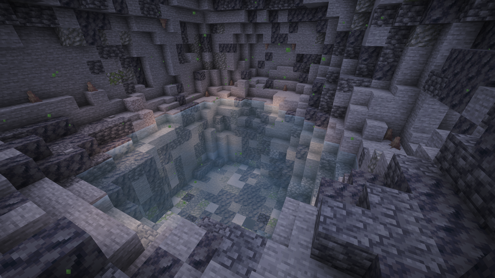
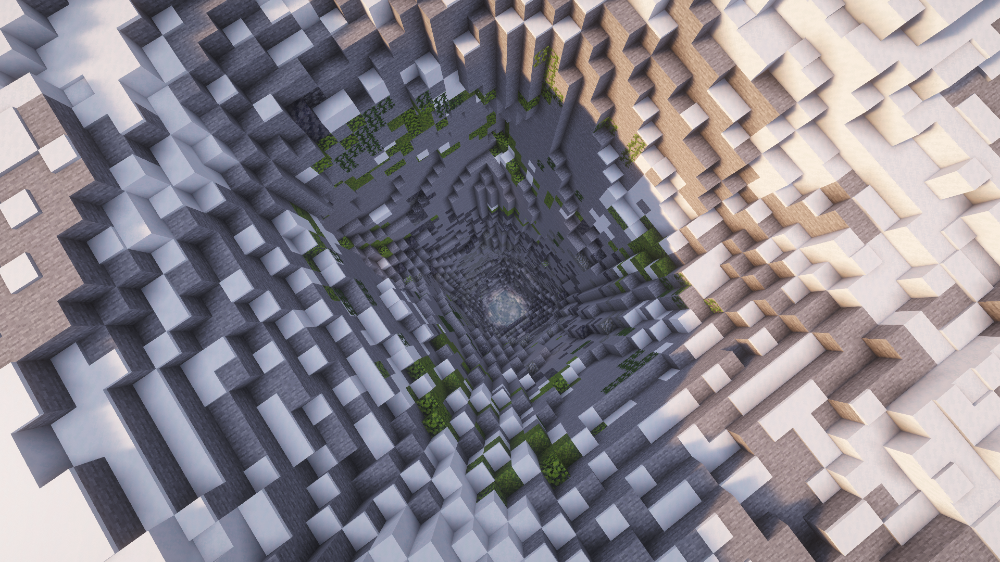
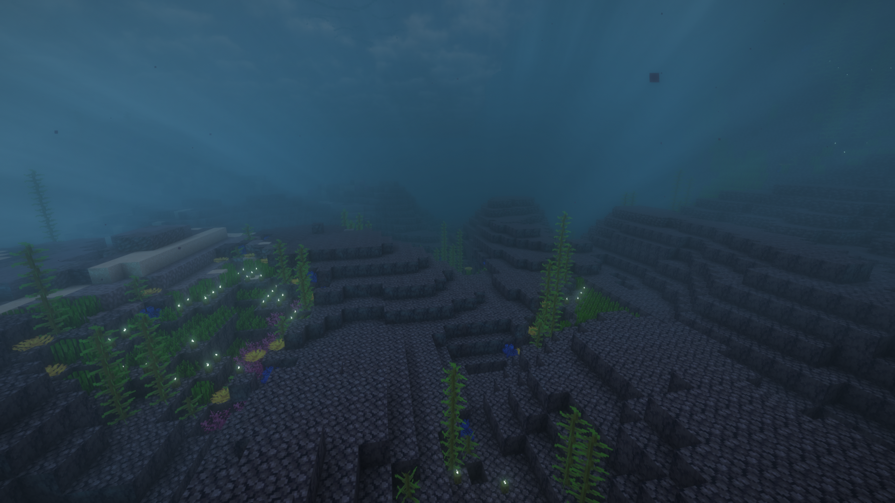
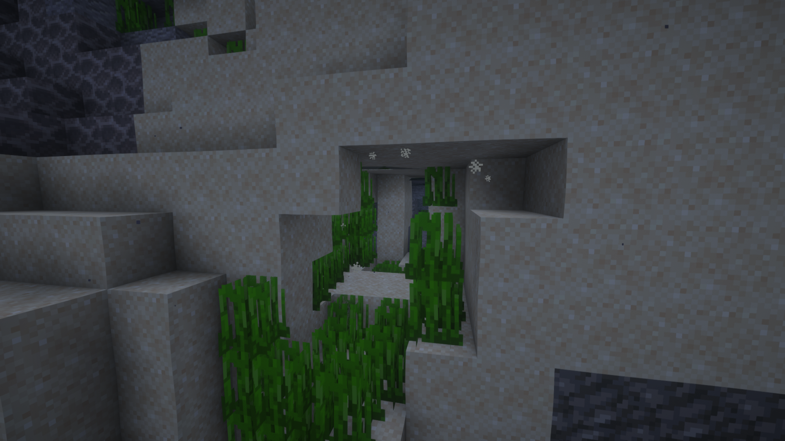
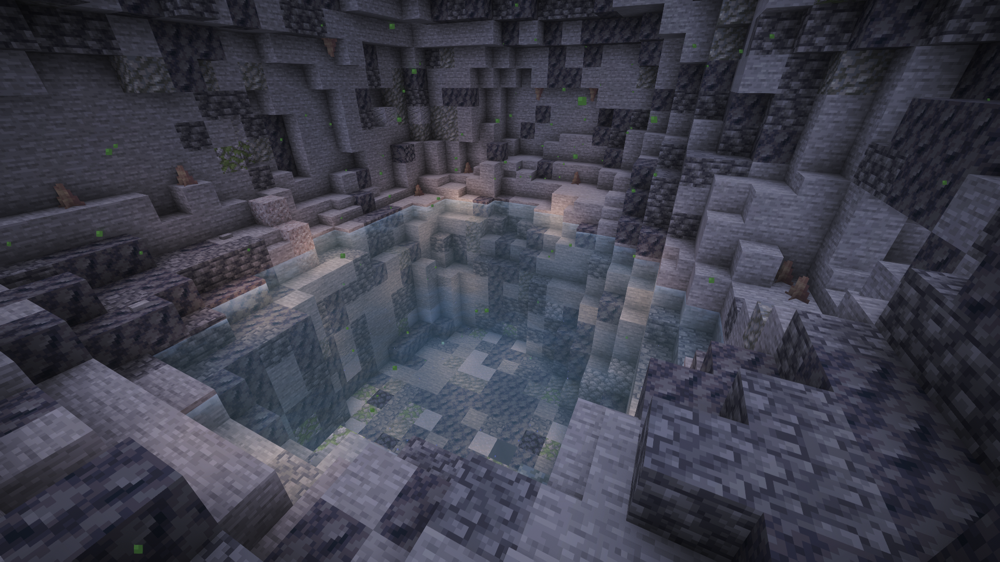
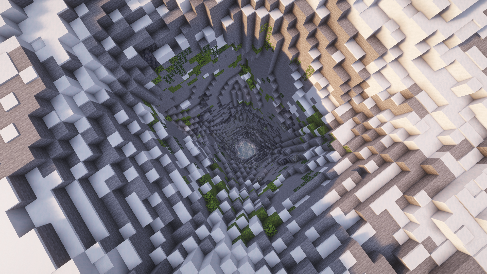
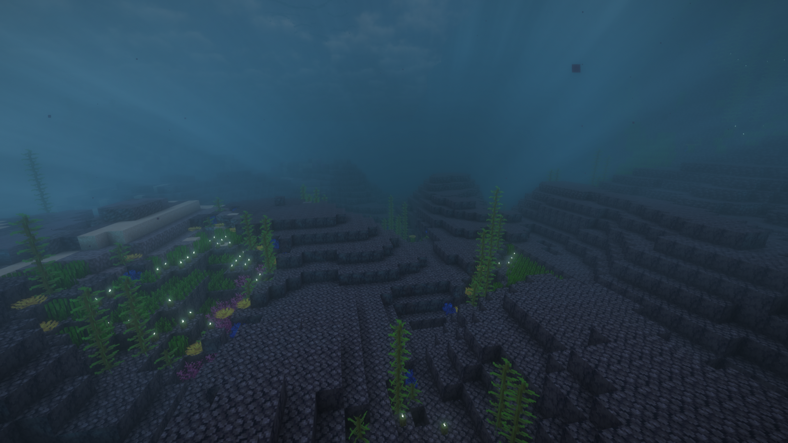
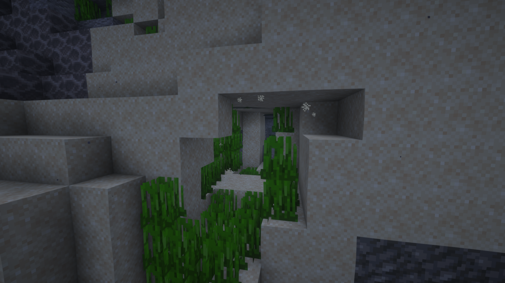
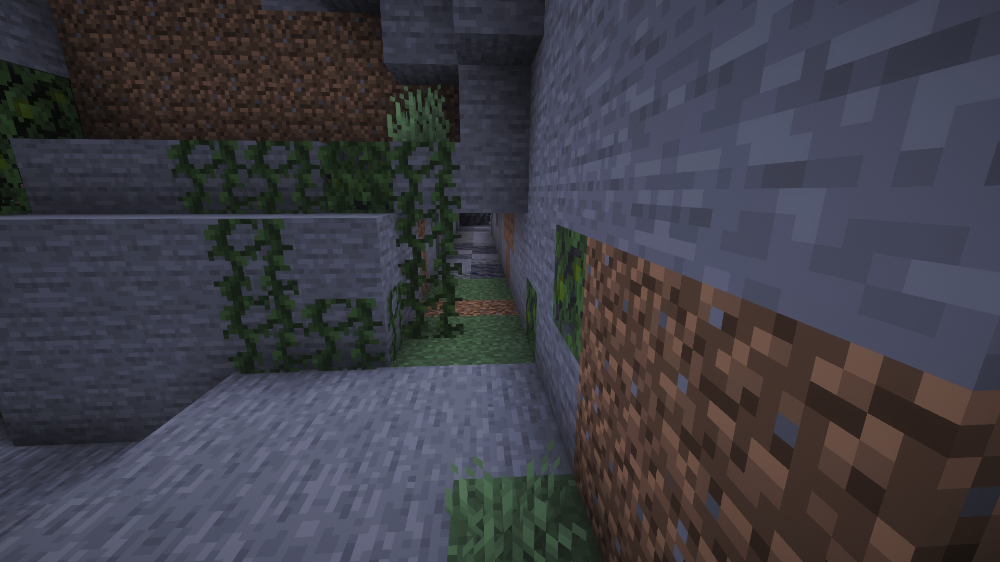
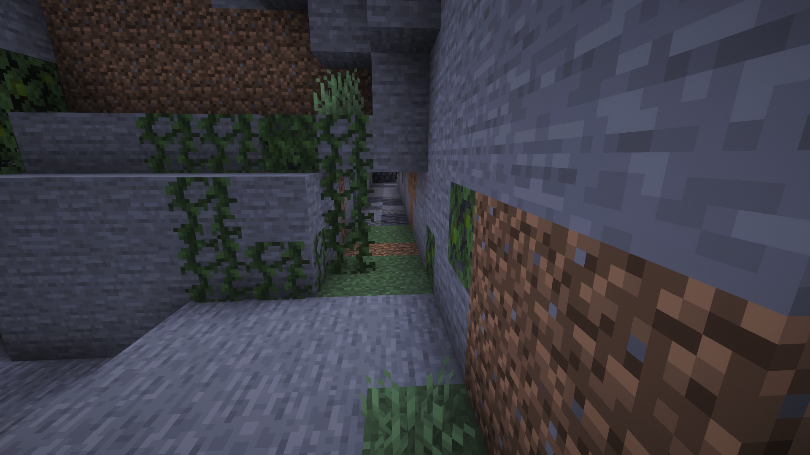

Dive into the Magic of Mako Island! 🧜♀️
Experience the magic of Mako Island in Minecraft! This map brings the world of H2O: Just Add Water and Mako Mermaids
to life with a highly accurate island shape based on maps from the series.
I used the Axiom tool to terraform a lush landscape, complete with dense forests, winding rivers, a volcano, and a massive custom coral reef surrounding the island.
🗺️ Explore Iconic Locations
- The Moon Pool: Experience the magic with light blocks that create the famous "glow."
- The Underwater Tunnel: Enter from the ocean (front left). I've added a teleportation system for convenience, but you can swim the full distance manually by hugging the 1-block gap at the top!
- Zac & Cam’s Camp: Visit the spot where the boys camped out.
- The Secret Land Entrance: Just like in Mako Mermaids Ep. 1, this secret entrance opens at night and teleports you directly above the Moon Pool.
- The H2O Cave: Find the hidden hole near the river where the girls first fell in. Navigate the tunnel maze to find your way to the Moon Pool!
📸 Island Gallery
Click on images to enlarge.
 








 



⚙️ Technical & Permissions
Technical Info: A book is provided at spawn if you need to locate or edit the command blocks.
Permissions: I hope you love this first version :D
You are welcome to change the map or use it in videos, provided you credit MakoModDev.
Please do not steal or re-upload as your own.